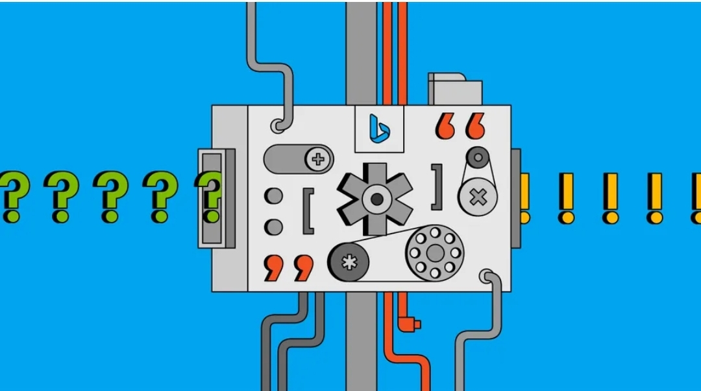

NASA Mission to Study Ice Clouds, Help Observe Our Dynamic Atmosphere

Published on May 25, 2023
NASA has selected a new mission to help humanity better
understand Earth’s dynamic atmosphere – specifically, ice clouds that form at high
altitudes throughout tropical and sub-tropical regions. The PolSIR instrument – short
for Polarized Submillimeter Ice-cloud Radiometer – will study such ice clouds to determine
how and why they change throughout the day. This will provide crucial information about how
to accurately simulate these high-altitude clouds in global climate models...Read more
SpaceX Squeezes Record-Setting Power Out Of New Raptor V3
Published on May 26, 2023
With the latest Raptor “V3” testing, the engineers at SpaceX has once again outperformed themselves...Read more
There’s Finally a Way to Secure a Crucial Piece of the Cloud
Published on May 25, 2023
AS SOFTWARE SUPPLY-CHAIN attacks have emerged as an everyday threat, where bad actors poison a step in the development or distribution process, the tech industry has had a wake-up call about the need to secure each link in the chain. But actually implementing improvements is challenging, particularly for the sprawling open-source cloud development ecosystem. Now, the security firm Chainguard says it has a more secure solution for one ubiquitous but long overlooked component...Read more
How Microsoft’s Bing Chatbot Came to Be—and Where It’s Going Next

Published on May 26, 2023
JORDI RIBAS HASN’T taken a day off since last September. That month, the Microsoft search and AI chief got the keys to GPT-4, a then secret version of OpenAI’s text-generation technology that now powers ChatGPT. As Ribas had with GPT-4’s predecessors, the Barcelona native wrote in Spanish and Catalan to test the AI’s knowledge of cities like his hometown and nearby Manresa. When quizzed about history, churches, and museums, its responses hit the mark. Then he asked GPT-4 to solve an electronics problem about the current flowing through a circuit. The bot nailed it. “That's when we had that ‘aha’ moment,” Ribas says...Read more
Stack Overflow Will Charge AI Giants for Training Data
Published on May 26, 2023
DEVELOPING THE AI systems behind tools such as ChatGPT and the image generator Dall-E costs hundreds of millions of dollars—and it’s about to get more expensive...Read more
ChatGPT’s Most Charming Trick Is Also Its Biggest Flaw
Published on May 26, 2023
LIKE MANY OTHER people over the past week, Bindu Reddy recently fell under the spell of ChatGPT, a free chatbot that can answer all manner of questions with stunning and unprecedented eloquence.
Reddy, CEO of Abacus.AI, which develops tools for coders who use artificial intelligence, was charmed by ChatGPT’s ability to answer requests for definitions of love or creative new cocktail recipes. Her company is already exploring how to use ChatGPT to help write technical documents. “We have tested it, and it works great,” she says...Read more